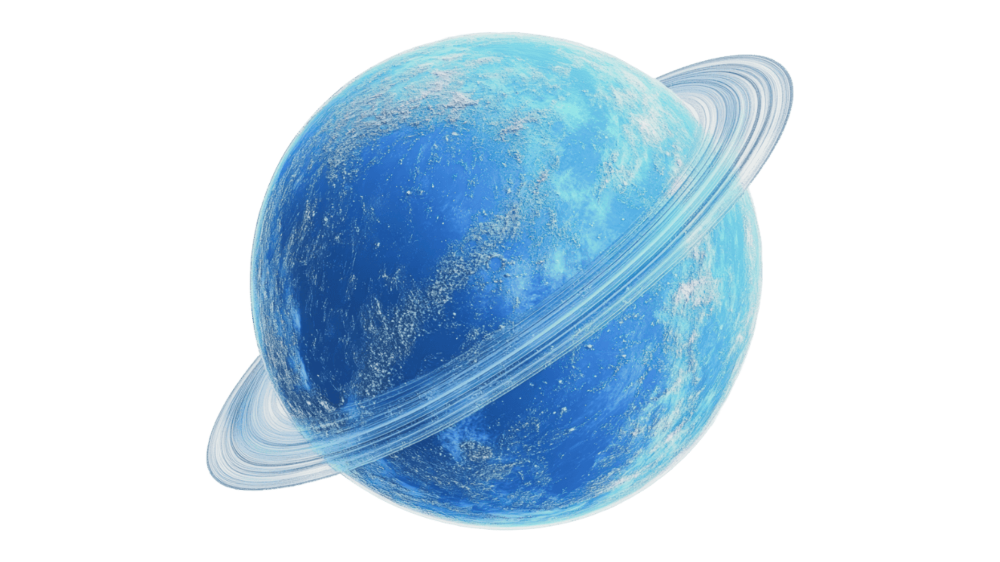

Уран
Аспан денесінің ерекшелігі: Системалық сипаттама
Уран — Күн жүйесіндегі жетінші планета және үшінші үлкен планета. Ол "мұзды алып" деп жіктеледі, себебі оның құрамында газды алыптарға қарағанда мұзды ұшпа заттар (су, метан, аммиак) көп. Уранның ең ерекшелігі — оның жанымен жатып айналуы, бұл оны басқа планеталардан ерекшелейді.
Қызықты Деректер (DATA ARRAY)
Жанымен Жату:
Уранның айналу осі 98 градусқа еңкейген, яғни ол Күнді бүйірімен жатып айналады.
Ең Суық Планета:
Уранның атмосферасында тіркелген ең төменгі температура -224 °C шамасында, бұл оны Күн жүйесіндегі ең суық планета етеді.
Көк Түс:
Оның көгілдір-жасыл түсі атмосферадағы метан газының қызыл жарықты сіңіріп, көк жарықты шағылыстыруынан туындайды.
Жарты Жылдық Тәулік:
Оның жанымен жатуына байланысты, полюстердің бірі Күн сәулесін 42 Жер жылы бойы алады, содан кейін 42 жыл қараңғылықта болады.
Сақиналар Жүйесі:
Уранның Юпитер, Сатурн сияқты өзінің 13 жіңішке сақинасы бар. Олар өте қараңғы және ұсақ бөлшектерден тұрады.
Спутниктер:
Уранның 27 белгілі серігі бар. Олардың барлығы Шекспир мен Александр Поуп шығармаларындағы кейіпкерлердің құрметіне аталған.